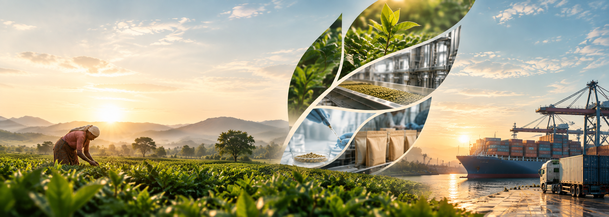
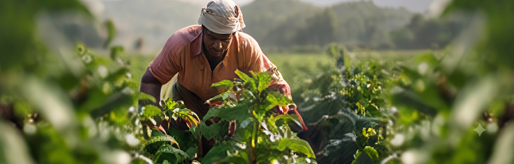
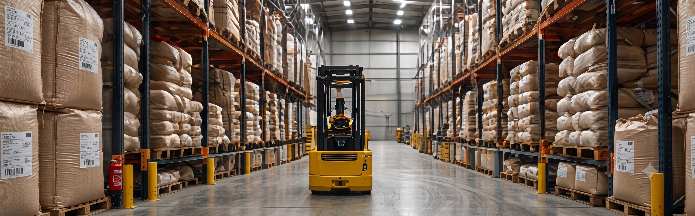
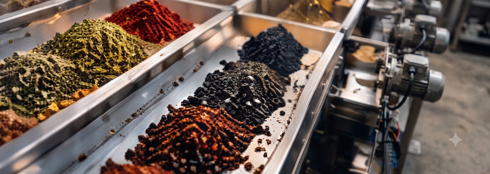
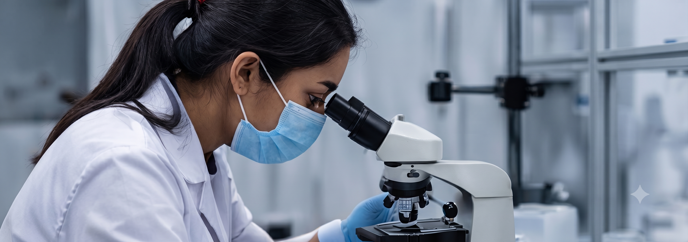
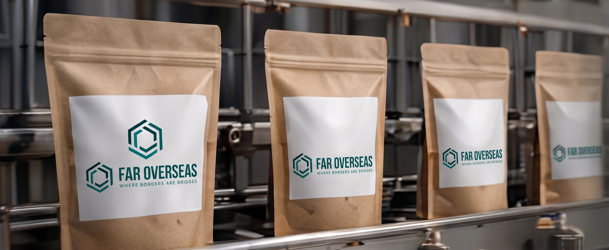
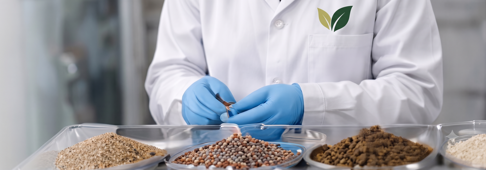

Our Process
From Nature
to the World.
A Carefully Managed Journey From Farms To Global Markets, Ensuring Purity, Quality And Trust At Every Step.
Explore Our Process
Our Commitment
A Process Built on
Purity & Trust.
From sourcing in the finest growing regions to delivering at global destinations, every stage of our process is guided by strict quality standards, advanced infrastructure and a team that cares.
Responsibly
Sourced
Quality Assured
At Every Step
Hygienic & Modern
Processing Facilities
Delivering Goodness
Worldwide
The FarOverseas Process
Eight Steps. A Healthier Tomorrow.
-
Growing
At the Source01Raw Material Procurement
Direct crop procurement from selective organic growing regions for each product.
-
02
Dedicated Handling
Handled under controlled conditions — temperature, packaging, and transport — to ensure products arrive in their pristine raw state.

Care
in Every
Harvest -

03Storage
Our state-of-the-art storage facilities are designed to maintain the natural quality of products while preserving their aroma, taste and nutritional value.
-
04
Sorting, Cleaning & Processing
Advanced machines and manual checks ensure a uniform grade, removing impurities while retaining the natural goodness of the product.

Purity
Through
Precision -

Tested
for a Safer
Tomorrow05Testing & Analysis
Every batch is tested for pesticides, heavy metals, microbiological parameters and other international food safety standards.
-
06
Packaging
Hygienic, food-grade and customized packaging solutions as per customer requirements, with complete labeling and documentation.

Packed
with Care -

07Quality Inspection & Final Approval
Our expert team conducts rigorous quality checks at multiple levels before the product is approved for dispatch.
-
08
Global Dispatch
Once approved, the product is carefully loaded, documented and dispatched to destinations across the globe.
From
Our Hands
to the World
Our Certifications
Globally Recognized. Always Trusted.


Bringing Goodness Globally
Partner with a Healthier,
Brighter Tomorrow.
Let's create a better, healthier world together. Connect with us for global opportunities.
Request a Quote